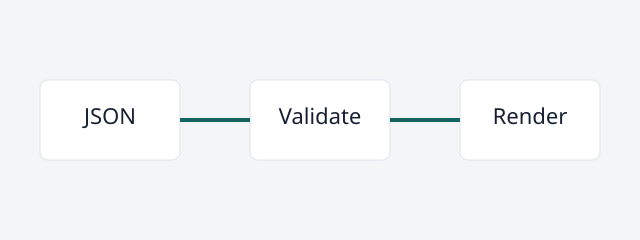

Spec
Stenc Spec Component Catalog
Comprehensive schema-v2 fixture for every native spec field and supported rich block primitive.
Human Summary
One fixture exposes the complete spec vocabulary so maintainers can review renderer coverage on a single page.
Agent Summary
Use this catalog to verify that every schema-v2 spec field and every current rich primitive remains validated and rendered.
Source Of Truth
skill/stenc/references/json-field-contract.mdskill/stenc/scripts/validate-stenc-doc.js
Goal
Lock the current schema-v2 spec component inventory with realistic, validator-approved content.
Problem
Small examples exercise isolated fields but do not reveal when a renderer change omits or visually collapses a supported spec component.
Scope
In
- Every current schema-v2 spec body field
- Every current supporting-section extension field
- Every current rich block and inline span type
Out
- Production structured diagram rendering
- Per-document style controls
- Executable client-side diagram runtimes
Architecture
The catalog remains canonical JSON, passes through the shared validator, and renders through the fixed Stenc page generator.
Flow
- Author structured fixture JSON
- Validate the complete schema inventory
- Render fixed semantic sections
- Inspect stable component classes
Requirements
Complete native field coverage
The fixture must populate every current schema-v2 spec field with concrete content.
Acceptance Criteria
- The validator accepts the catalog without compatibility fallbacks.
- The generated page exposes all primary spec sections.
Complete rich primitive coverage
The fixture must include every supported inline span, callout tone, rich block type, and structured diagram type.
Acceptance Criteria
- All seven inline span types appear in one paragraph block.
- Neutral, info, success, warning, and danger callouts are present.
- Quote, table, media, task list, and source diagram blocks are present.
- Layer, flow, and relation diagram blocks are present.
Approaches
Single comprehensive catalog
Tradeoffs
- Makes the fixture intentionally dense
- Provides one stable renderer inventory surface
Recommendation
Use one comprehensive fixture as the semantic coverage contract.
Many isolated fixtures
Tradeoffs
- Keeps individual documents smaller
- Makes omissions across the full document harder to spot
Recommendation
Retain focused behavior tests, but use this catalog for complete inventory coverage.
Components
Structured source fixture
Represent every current spec contract field without renderer-only meaning.
Interfaces
examples-app/content/specs/component-catalog.spec.jsonexamples/component-catalog.spec.json
Dependencies
- Schema-v2 field contract
- Rich block validator contract
Fixed renderer
Project the canonical fixture into consistent human-readable sections.
Interfaces
skill/stenc/scripts/setup-project.js
Dependencies
- Validated source JSON
- Local media assets
Data Flow
- Read component catalog JSON
- Validate native fields and bounded rich blocks
- Copy local media assets
- Generate deterministic HTML
- Assert semantic class tokens
Error Handling
| Case | Behavior |
|---|---|
| Fixture contains an unsupported field | Validation fails with the exact unsupported path before rendering. |
| Local media is unavailable | The renderer shows a fixed missing-media panel without changing the JSON source contract. |
Contracts
Canonical source contract
- JSON remains the only document source.
- Renderer classes do not define document meaning.
- Every extension uses a validator-known supporting primitive.
Diagram source contract
- The diagram block stores escaped source text.
- No browser runtime executes the diagram source.
File Or Surface Map
| Path | Role | Owner |
|---|---|---|
examples-app/content/specs/component-catalog.spec.json | Examples app source fixture | stenc-maintainers |
examples/component-catalog.spec.json | Standalone mirrored fixture | stenc-maintainers |
skill/stenc/scripts/setup-project.test.js | Semantic renderer inventory test | stenc-maintainers |
Testing Strategy
| Command | Expected |
|---|---|
node skill/stenc/scripts/validate-stenc-doc.js examples examples-app/content | Stenc validation passed. |
node --test --test-name-pattern='renders comprehensive spec and plan component catalogs' skill/stenc/scripts/setup-project.test.js | The inventory test reports only renderer semantic classes that are not implemented yet. |
Validation
| Command | Purpose |
|---|---|
cmp examples-app/content/specs/component-catalog.spec.json examples/component-catalog.spec.json | Confirm the examples-app and standalone spec fixtures are byte-identical. |
node skill/stenc/scripts/validate-stenc-doc.js examples examples-app/content | Validate the complete fixture collection against the live schema. |
Agent Instructions
- Keep this catalog aligned with the validator whenever a spec field or rich primitive changes.
- Add new source primitives to the schema before expecting the catalog to use them.
- Preserve byte parity with the standalone example fixture.
Review Checklist
- Every current native spec field contains concrete content.
- Every inline span and callout tone is visible.
- No renderer-only meaning or per-document styling is present.
Self Review Checks
| Name | Purpose |
|---|---|
| Schema completeness | Compare the fixture against REQUIRED_BODY_FIELDS, BODY_FIELDS, and optional schema-v2 spec fields. |
| Primitive completeness | Compare blocks against RICH_BLOCK_TYPES, INLINE_SPAN_TYPES, and CALLOUT_TONES. |
| Source integrity | Confirm the fixture is structured JSON with no unsupported visual controls. |
Implementation Handoff
Plan location: examples-app/content/plans/component-catalog.plan.json
Required skill: superpowers:writing-plans
- Use the related plan for renderer implementation sequencing.
- Keep structured diagram rendering in the dedicated renderer slice.
Supporting Sections
Rich Primitive Inventory
These bounded blocks exercise the current rich rendering contract while core behavior remains in native spec fields.
- Inline semantics stay explicit in typed spans.
- Callout tone is selected from a fixed validator-known set.
- Media and diagram blocks remain local and non-executable.
Facts
| Label | Value |
|---|---|
| Schema Version | 2 |
| Canonical Format | Structured JSON |
Links
| Label | Target | Purpose |
|---|---|---|
| Field contract | skill/stenc/references/json-field-contract.md | Defines the supported schema and rich primitive shapes. |
| Validator | skill/stenc/scripts/validate-stenc-doc.js | Enforces the canonical source contract. |
Steps
Inspect complete source coverage
Compare every catalog field with the current validator constants.
Validate fixture collections
Run
node skill/stenc/scripts/validate-stenc-doc.js examples examples-app/contentExpected
Stenc validation passed.
Inspect the validator command shape
node skill/stenc/scripts/validate-stenc-doc.js examples examples-app/content{
"schemaVersion": 2,
"docType": "spec"
}The canonical catalog uses typed semantics, runs ./scripts/validate.sh, documents Cmd+K, marks stable coverage, and links to the field contract.
Neutral inventory note
This block records supporting context without changing contract priority.
Canonical source
Structured JSON remains authoritative and generated HTML remains derived.
Validation evidence
The fixture is ready for renderer work when the live validator accepts it.
Coverage drift
A new schema field requires a matching catalog update and renderer decision.
Unsupported extension
Reject raw markup, custom components, and per-document visual controls.
A complete fixture turns renderer omissions into visible contract failures.
| Primitive | Contract |
|---|---|
| Paragraph | Typed inline spans |
| Callout | Five bounded tones |
| Media | Local assets only |
| Diagram | Escaped source panel |

- Complete: Validate the canonical JSON fixture
- Not complete: Implement the semantic renderer classes
flowchart LR
JSON --> Validator
Validator --> Renderer
Renderer --> HTMLDocument sources pass through validation before fixed rendering.
- Source
(source)— Role: consumer.Canonical JSON carries the complete document contract.
- Catalog JSON
(catalog-json): Contains native fields and bounded supporting blocks.
Transition: The validator checks every field and relation.
- Catalog JSON
- Validation
(validation)— Role: boundary.Dependency-free checks reject contract drift.
- Stenc Validator
(stenc-validator): Accepts only validator-known structures.
- Stenc Validator
Validated catalog data flows into deterministic generated output.
View Catalog projection flow text and relation table.
Nodes.
- Validate
(validate)— Role: boundary. Checks the canonical source contract. - Render
(render)— Role: surface. Projects escaped values into fixed components.
| From | Relation | To |
|---|---|---|
Validate (validate) | provides approved document | Render (render) |
The source contract and validator jointly constrain the renderer.
View Catalog ownership relations text and relation table.
Nodes.
- Field Contract
(contract)— Role: value. Defines the supported semantic vocabulary. - Validator
(validator)— Role: boundary. Enforces the field contract before generation. - Renderer
(renderer)— Role: engine. Produces fixed escaped output from valid data.
| From | Relation | To |
|---|---|---|
Field Contract (contract) | defines rules for | Validator (validator) |
Validator (validator) | supplies validated input to | Renderer (renderer) |
Nested Review Guidance
Nested sections cover bounded legacy outline detail without creating a custom component system.
- Review native fields before supporting content.
Facts
| Label | Value |
|---|---|
| Review Gate | Schema and renderer coverage |
Links
| Label | Target | Purpose |
|---|---|---|
| Renderer test | skill/stenc/scripts/setup-project.test.js | Asserts the stable semantic class inventory. |
Steps
Confirm derived output
Verify that generated HTML can be deleted and recreated from this JSON source.
source JSON -> generated HTMLNested content remains bounded and deterministic.
Open Questions
No open questions.